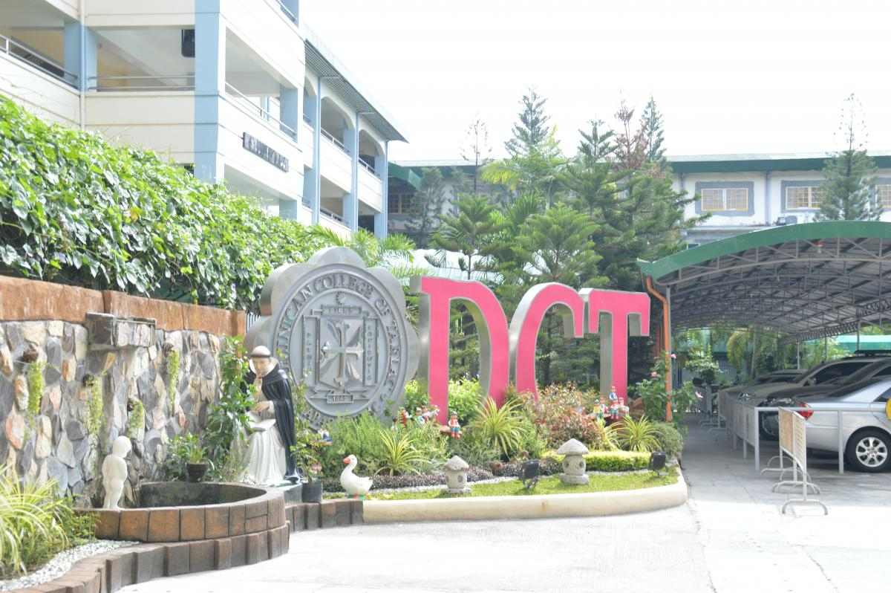

IT Student at Dominican College of Tarlac — passionate about building software, learning new technologies, and gaming.
Technologies, games, and subjects I've picked up over the years.
My path from elementary to college — always learning, always growing.

A little peek into who I am outside of academics.
Being a first-year IT college student. My parents wanted me to take IT even though I wanted tourism. At first, I didn't know anything about IT, so I was nervous that I might not enjoy the course. But as time passed, I slowly started to enjoy it. I've learned a lot from my different subjects, especially in Multimedia, Human-Computer Interaction (HCI), and more. There were times I felt overwhelmed, but I also discovered how important patience and practice are. Another important part of my college experience is meeting new people. I have gained new friends who are also going through the same challenges, and they help make studying more enjoyable. Having classmates I can talk to, share ideas with, and rely on makes college life less stressful and more meaningful.
Feel free to reach out — I'm always open to new connections.
Whether it's a project, a collaboration, or just a chat — I'm here.